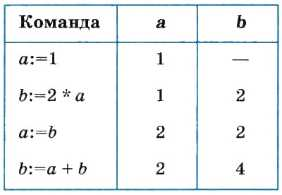
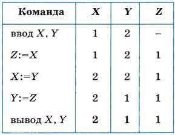
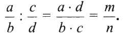
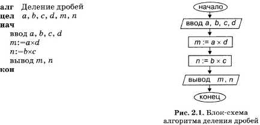
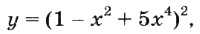
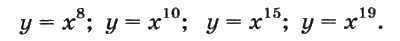
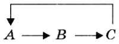

Присваивание производится компьютером при выполнении одной из двух команд из представленной выше системы команд: команды присваивания или команды ввода.
Рассмотрим последовательность выполнения четырех команд присваивания, в которых участвуют две переменные: а и b. В приведенной ниже таблице против каждой команды указываются значения переменных, которые устанавливаются после ее выполнения. Такая таблица называется трассировочной таблицей, а процесс ее заполнения называется трассировкой алгоритма.

Рассмотрим еще один очень полезный алгоритм, с которым при программировании часто приходится встречаться. Даны две переменные величины: X и Y. Требуется произвести между ними обмен значениями. Например, если первоначально было: X = 1; Y = 2, то после обмена должно стать: X = 2, Y = 1.
Хорошим аналогом для решения такой задачи является следующая: даны два стакана, в первом — молоко, во втором — вода; требуется произвести обмен их содержимым. Всякому ясно, что в этом случае нужен дополнительный, третий, пустой стакан. Последовательность действий будет следующей:
1) перелить из 1-го стакана в 3-й;
2) перелить из 2-го стакана в 1-й;
3) перелить из 3-го стакана во 2-й.
Цель достигнута!
По аналогии для обмена значениями двух переменных нужна третья дополнительная переменная. Назовем ее Z. Тогда задача решается последовательным выполнением трех операторов присваивания (пусть начальные значения 1 и 2 для переменных X и Y задаются вводом):

Действительно, в итоге переменные X и Y поменялись значениями. На экран будут выведены значения X и Y: 2,1. В трассировочной таблице выводимые значения выделены жирным шрифтом.
Аналогия со стаканами не совсем точна в том смысле, что при переливании из одного стакана в другой первый становится пустым. В результате же присваивания (Х:=Y) переменная, стоящая справа (Y), сохраняет свое значение.
Описание линейного вычислительного алгоритма
Алгоритмы, результатами выполнения которых являются числовые величины, будем называть вычислительными алгоритмами. Рассмотрим пример решения следующей математической задачи:
даны две простые дроби; получить дробь, являющуюся результатом деления одной на другую.
В школьном учебнике математики правила деления обыкновенных дробей описаны так:
1. Числитель первой дроби умножить на знаменатель второй.
2. Знаменатель первой дроби умножить на числитель второй.
3. Записать дробь, числителем которой является результат выполнения пункта 1, а знаменателем — результат выполнения пункта 2.
В алгебраической форме это выглядит следующим образом:

Теперь построим алгоритм деления дробей для компьютера. В этом алгоритме сохраним те же обозначения для переменных, которые использованы в записанной выше формуле. Исходными данными являются целочисленные переменные а, b, с, d. Результатом — также целые величины m и n.
Ниже алгоритм представлен в двух формах: в виде блок-схемы и на Алгоритмическом языке (АЯ).
Раньше прямоугольник в схемах алгоритмов управления мы называли блоком простой команды. Для вычислительных алгоритмов такой простой командой является команда присваивания. Прямоугольник будем называть блоком присваивания, или вычислительным блоком. В форме параллелограмма рисуется блок ввода/вывода. Полученный алгоритм имеет линейную структуру (рис. 2.1).

В алгоритме на АЯ строка, стоящая после заголовка алгоритма, называется описанием переменных. Служебное слово цел означает целый тип. Величины этого типа могут иметь только целочисленные значения.
Описание переменных имеет вид:
<тип переменных> <список переменных>
Список переменных включает все переменные величины данного типа, обрабатываемые в алгоритме.
В блок-схемах типы переменных не указываются, но подразумеваются. Запись алгоритма на АЯ ближе по форме к языкам программирования, чем блок-схемы.
Коротко о главном
Основные свойства присваивания:
• значение переменной не определено, если ей не присвоено никакого значения;
• новое значение, присваиваемое переменной, заменяет ее старое значение;
• присвоенное переменной значение сохраняется в ней вплоть до нового присваивания.
Обмен значениями двух переменных можно производить через третью дополнительную переменную.
Трассировочная таблица используется для «ручного» исполнения алгоритма с целью его проверки.
В алгоритмах на АЯ указываются типы всех переменных. Такое указание называется описанием переменных.
Числовые величины, принимающие только целочисленные значения, описываются с помощью служебного слова цел (целый).
Вопросы и задания
1. Из каких команд составляется линейный вычислительный алгоритм?
2. Что такое трассировка? Как она производится?
3. В каком случае значение переменной считается неопределенным?
4. Что происходит с предыдущим значением переменной после присваивания ей нового значения?
5. Как вы думаете, можно ли использовать в выражении оператора присваивания неопределенную переменную? К каким последствиям это может привести?
6. Напишите на АЯ алгоритм сложения двух простых дробей (без сокращения дроби).?
7. Напишите на А Я алгоритм вычисления у по формуле

где х — заданное целое число. Учтите следующие ограничения:
1) в арифметических выражениях можно использовать только операции сложения, вычитания и умножения;
2) каждое выражение может содержать только одну арифметическую операцию.
Выполните трассировку алгоритма при х = 2.
8. Пользуясь ограничениями предыдущей задачи, напишите наиболее короткие алгоритмы вычисления выражений:

Постарайтесь использовать минимальное количество дополнительных переменных. Выполните трассировку алгоритмов.
Запишите алгоритм циклического обмена значениями трех переменных А, В, С. Схема циклического обмена:

Например, если до обмена было: А = 1, В = 2, С = 3, то после обмена должно стать: А = 3, В = 1, С = 2. Выполните трассировку.